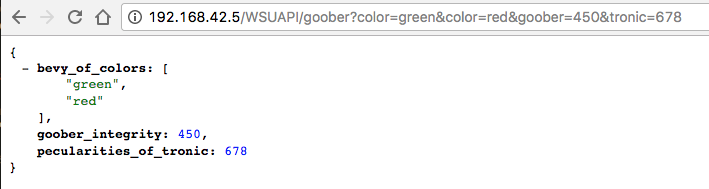

{
"published": true,
"layout": "post"
}
I'm excited to say, work has commenced on a rewrite of Digital Collection's primary API (pinning this link to a commit before the API disappears as we know it). I also use the term "API" a bit loosely here, as it has served almost exclusively for internal use, powering our decoupled front-end. Now an API that is used wholly internally certainly qualifies under the myriad of API definitions out there. Where I challenge that coveted title is the lack of consistency and documentation it has exhibited until this point.
And that's okay! Which, if one hasn't noticed already, is a running theme around here.
The API grew piecemeal with the rest of the ecosystem. Where once it queried Solr directly for an object's metadata, later it would retrieve that Solr doc via a method buried in an Ouroboros content-type object. Where once we would fire off multiple API functions to fire -- member of collections, related objects, comprehension of images, etc. -- later they were grouped under a singleObjectPackage class that aggregated and returned all that information in single, sprawling response. It's come a long way, and has proved to be extremely versatile, reliable, and fun to build.
But as mentioned in a previous post, we are in the process of re-building / refreshing the front-end, and the opportunity presented itself to rework, refine, and wildly improve a meandering bit of code.
With this opportunity to completely restructure the API, it's a great time to leverage a library that might help with building out an API. After a bit of poking around, Flask-RESTful emerged as a very enticing option, and the route I think we're going. For a variety of reasons:
One of our goals with the Digital Collections is to treat our collections as data in many ways (a quick Googling will reveal the blossoming ideas and literature around this idea, perhaps fodder for another typing). Mark Phillips from UNT has a neat post about hacking their resource URLs, that left a lasting impression. Excited about the thoughtful way in which the URL could be leveraged for different views and pieces of a resource. It percolated for a bit until this opportunity for API and front-end reworking, and the simulataneous emphasis on collections as data, presented itself.
Without losing the thread too quickly here, I would like our API for routes such as /item/wayne:foobar/metadata or /item/wayne:foobar/? to return metadata in JSON form, but then have a route like /item/wayne:foobar/txt -- if it's a book -- return raw text, with a text/plain Content-Type header. More to the point of content negotiation, let the client request different forms of the same information at the same route.
Good grief, this is just a no brainer. We can enforce parameters types (string, int, etc.), and automatically return responses specific to a particular parameter, with appropriate HTTP codes, as well. Sign me up.
This is really just the tip of the iceburg. Instead of wiring and hand-rolling each response or error, we can pipe our data through this library in a coherent fashion each time. Moreover, this pattern I keep encountering, I would like to put the kibosh on:
And SO, mistake made not again! Flask-RESTful has been an utter delight thus far, and looking forward to pressing on.